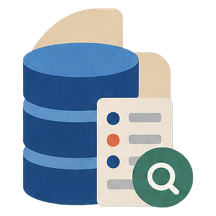
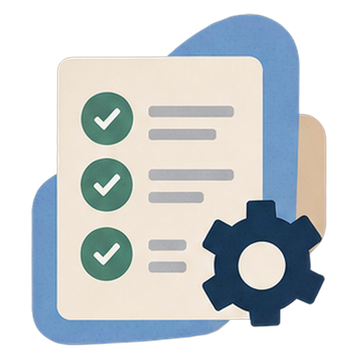
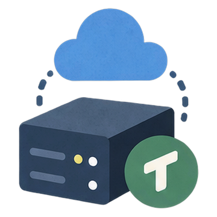

Cancan技术负责人 / 全栈 AI 开发
从 0 到 1，
把法律 AI 做到可交付。
围绕 XXX 律师事务所的连锁餐饮业务场景，构建广告合规 Agent，将审核、复核、修订与正式交付整合为一套完整工作流。
- 01 / MY ROLE技术负责人 · 全栈交付
独立负责核心产品的设计与工程实现，覆盖 AI 工作流、前后端、评测与部署。
- 02 / COLLABORATIONBoston University
与 Boston University PhD 在读伙伴共同推进产品与项目研究。
SELECTED WORK / 01
法律广告合规 Agent
2026角色技术负责人
职责独立负责全栈 AI 工程
产品法律广告合规 Agent
01我负责
什么Role
什么Role
八个核心模块，一个人完成工程闭环。
律师团队提供业务规则、真实审核样本与专业反馈；产品设计、AI 工作流、前后端、系统集成、评测框架与部署由我独立完成。
01
UI审核工作台
- Workspace
- 三栏审核工作台 · 逐段复核 · 状态签认 · 划选引用 · 定向修订
- Realtime
- 流式生成 · Agent 执行轨迹 · 检索状态 · 证据回执
- Supporting Systems
- 知识库 · 后台管理 · 双语界面 · 移动端适配 · PDF / Word 导出
- Frontend
- TypeScriptNext.jsReactshadcn/ui
02
爬虫监管数据入库
- 来源
- 处罚案例 · 法规条文 · 行业规则 · 官方来源
- 流程
- 采集 · 清洗 · 去重 · 结构化 · 版本标记
- 质量
- 质量审计 · 弱标注回溯 · 持续更新
- 技术
- Python异步采集
03
数据库版本与向量索引
- 存储
- PostgreSQL · pgvector · SQLite · 向量 · 关键词索引
- 写入
- 追加写入 · 版本谱系 · 操作账本 · CAS 提交
- 安全
- SQLCipher 加密 · 自动备份 · 恢复
- 技术
- PostgreSQLpgvectorSQLiteSQLCipher

04
Agent 框架多工具检索运行时
- 工具
- 受限 Grep · 全文读取 · 向量召回 · 库内记录
- 调度
- 并行调用 · 去重 · 协作式取消 · 模型 fallback
- 控制
- 上下文压缩 · 循环熔断 · 预算 · 降级语义
- 技术
- asyncio工具循环fallback
05
Harness Engineering可验证的模型输出
- 流程
- 首审 · 主张拆解 · 证据晋升 · 闸门 · 终审
- 状态
- 多轮 · 持久状态 · 操作信封 · 类型化 patch · 校验
- 评测
- 评测 · 真实样本复演 · 干净基线 · 回归
- 技术
- 确定性闸门类型化 patch真实样本回放

06
多模态文本 · 图片 · 视频
- 识别
- OCR · ASR · 关键帧 · 视觉语言模型
- 溯源
- 内容溯源 C2PA · AIGC 检测 · 编辑痕迹
- 接入
- 统一接入 · 同一条审核链路
- 技术
- PaddleOCRASRQwen-VLC2PA
07
安全认证 · 加密 · 防护
- 认证
- JWT · Argon2 · 所有权校验 · 限流 · CORS
- 防护
- 四层反爬 · SQLCipher · 日志 · 备份
- 模型
- 提示注入拦截 · 输出过滤 · 渗透测试 · 审计
- 技术
- JWTArgon2反爬输出过滤
08
NUC + Tailscale 部署离线交付 · 远程运维
- 打包
- Docker Compose · Nginx · HTTPS · 离线安装包
- 运维
- Tailscale · 远程运维 SOP · systemd · 网络自愈
- 验收
- 端到端验收 · 生产环境 · 持续运行
- 技术
- Docker ComposeNginxTailscalesystemd
